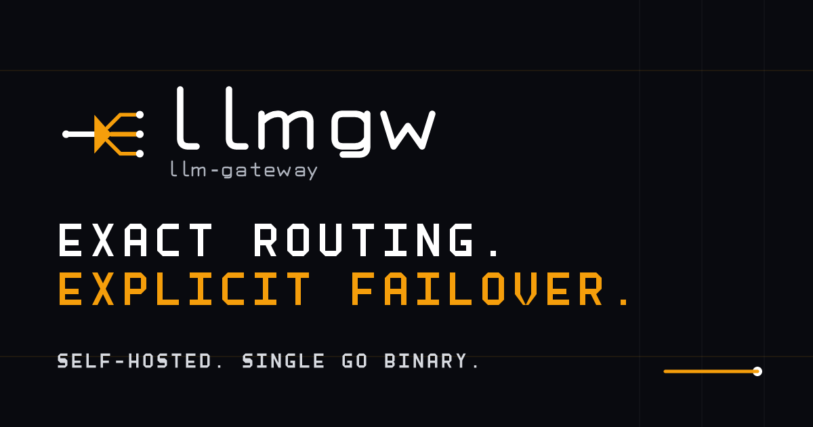

Exact routes, made visible.
The llm-gateway identity pairs the compact llmgw wordmark with the Optical Rail Splitter: one input, an explicit split, and three known outputs.
Primary dark treatment
Exact routing.
Explicit failover.
Self-hosted. Single Go binary.
Light treatment
Detail Ink carries the rails, terminals, and wordmark; Accessible Dark Amber carries the splitter on light surfaces.
Mark and icon
Core colors
Carbon Obsidian#090A0F
Detail Ink#111827
Laser Amber#F59E0B
Accessible Dark Amber#B45309
Signal White#FFFFFF
Default social preview

Deterministic 1200x630 PNG projected from the local SVG master.